Целью лабораторной работы является получение практических навыков по настройке виртуальных локальных сетей VLAN на сетевых коммутаторах. В ходе выполнения лабораторной работы необходимо изучить принципы сегментации сети и научиться разделять одну физическую сеть на несколько логических се- тей. Использование VLAN позволяет повысить безопасность сети, уменьшить широковещательный трафик и упростить администрирование сети. Также в ходе выполнения работы необходимо научиться использовать протокол VTP для централизованного управления VLAN в сети, а также настроить взаимо- действие между коммутаторами при помощи trunk-соединений. Выполнение лабораторной работы позволяет лучше понять принципы построения совре- менных корпоративных сетей и получить навыки конфигурирования сетевого оборудования.
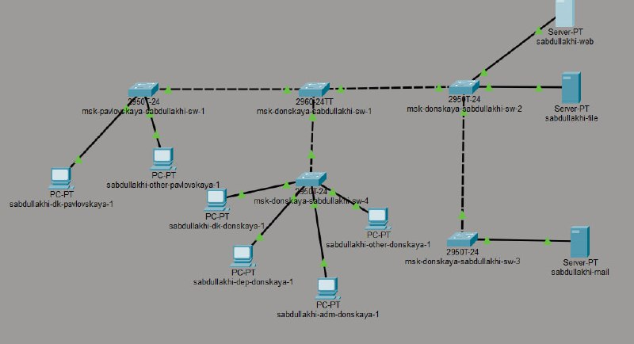
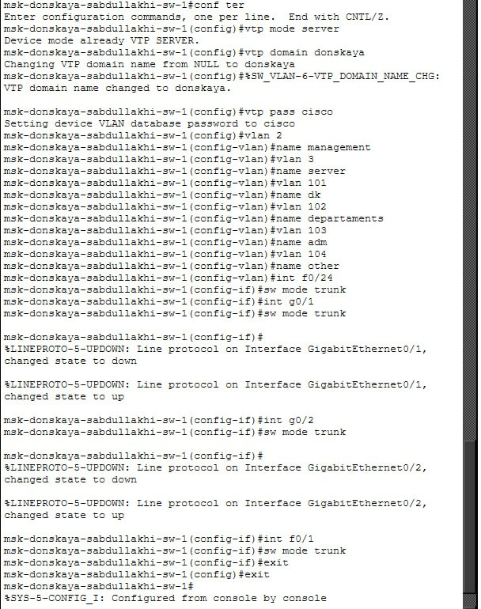
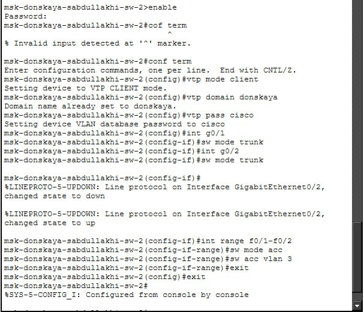
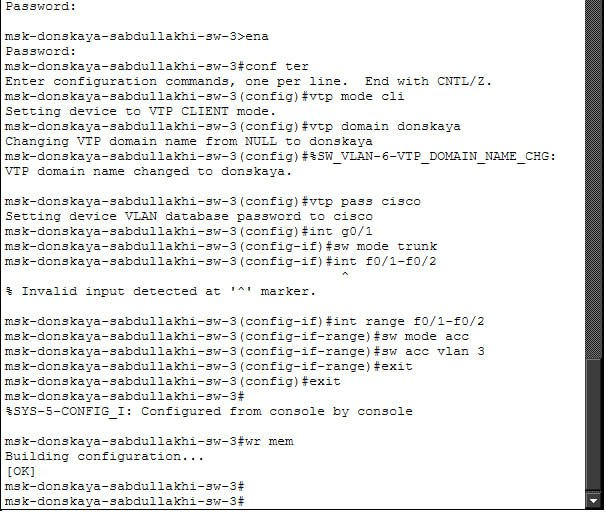
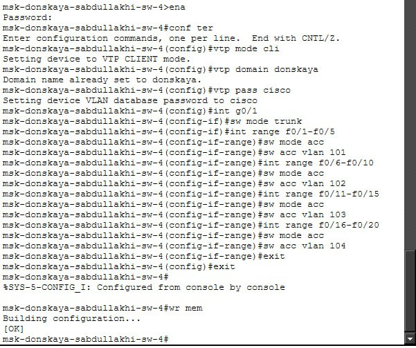
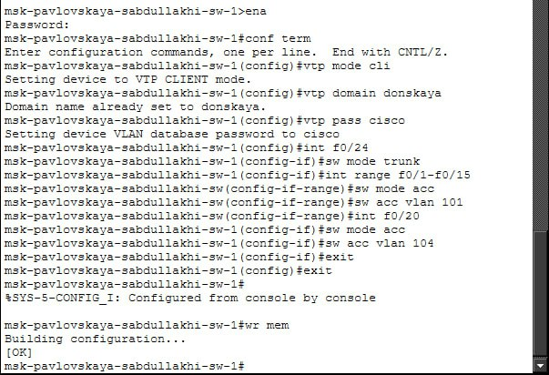
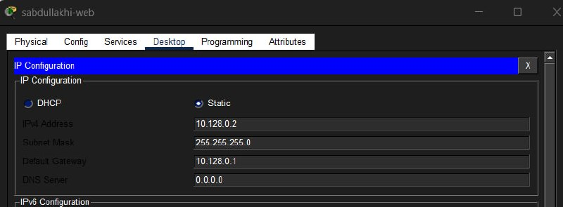
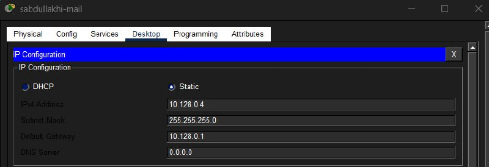
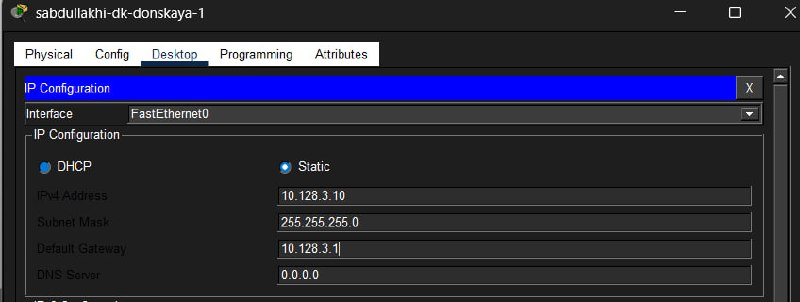
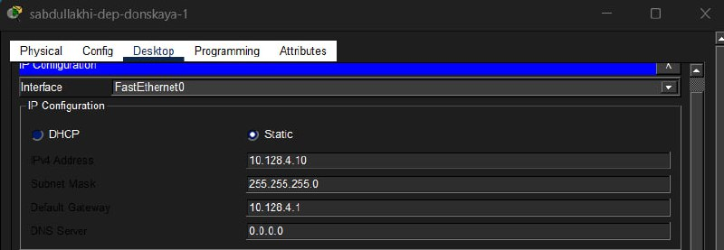
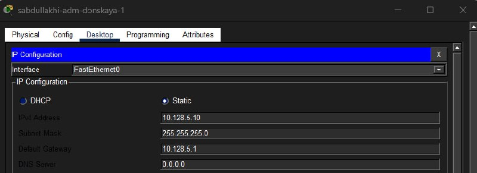
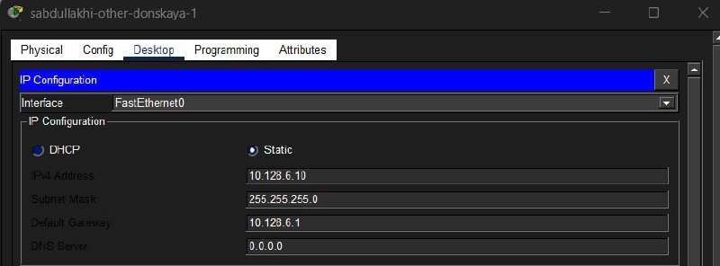
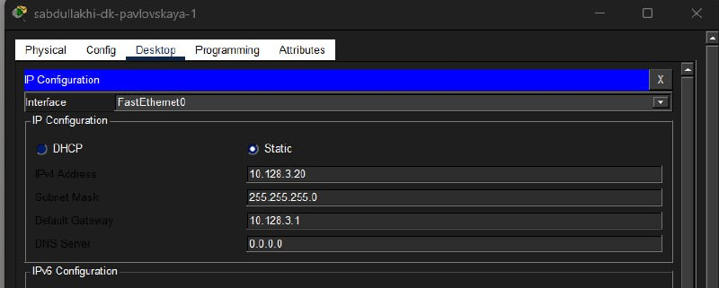
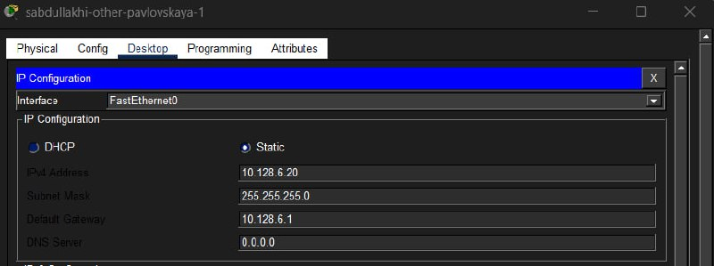
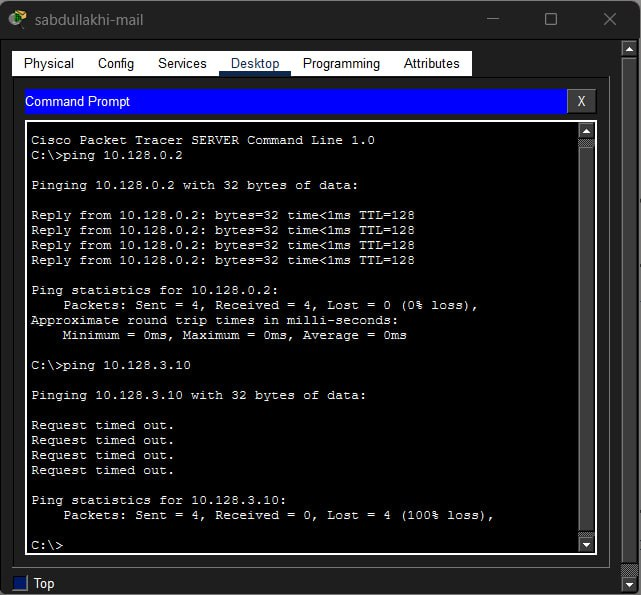
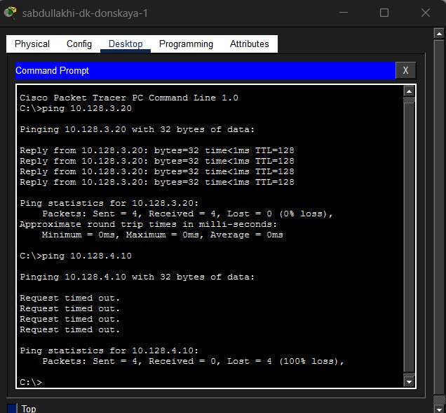
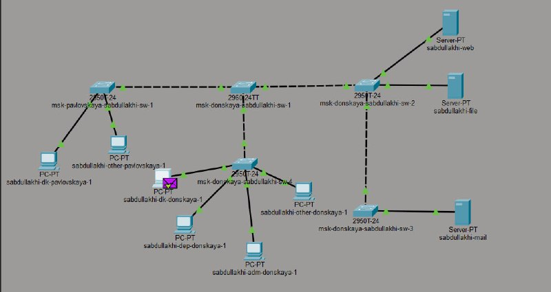
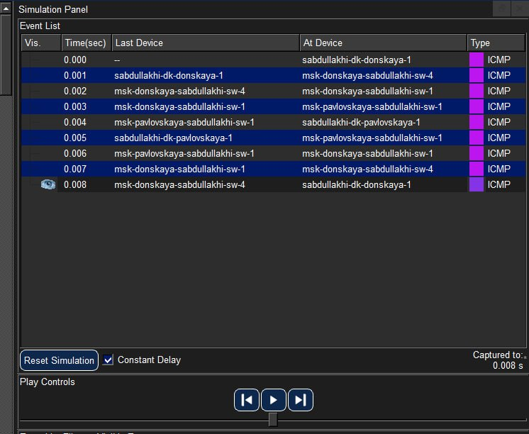
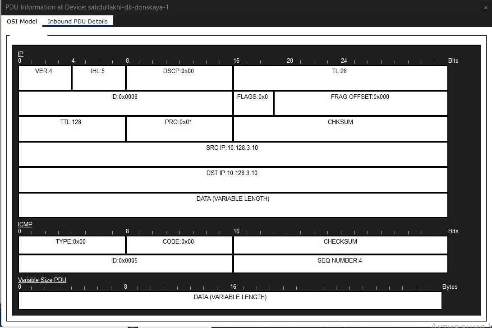
В ходе выполнения лабораторной работы была изучена технология VLAN и получены практические навыки по настройке виртуальных локальных сетей. Были выполнены следующиедействия: • построена топология сети • настроен VTP-сервер • настроены VTP-клиенты • созданы VLAN • настроены IP-адреса устройств • выполнена проверка сетевойсвязности Полученные результаты подтвердили корректную работу сети и правильность выполненной конфигурации. Использование VLAN позволяет значительно повысить эффективность управления сетью, улучшить безопасность и снизить нагрузку на сеть.